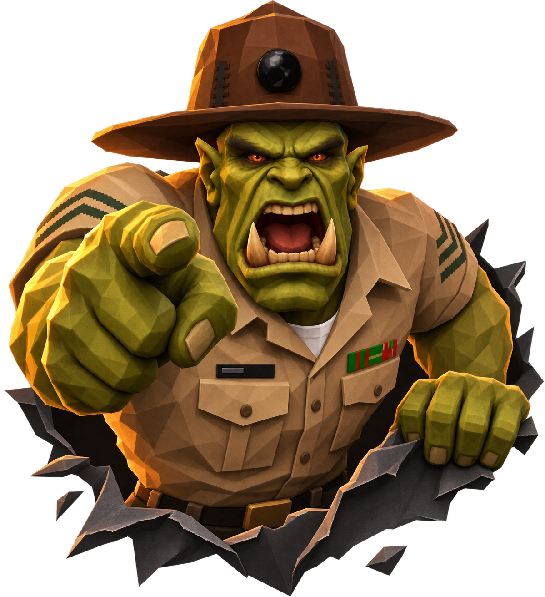
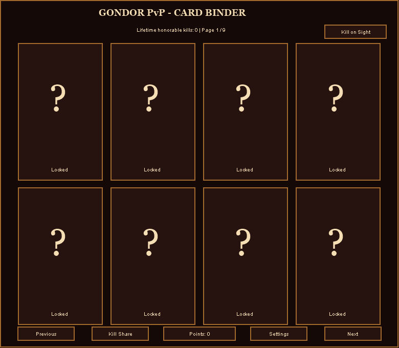
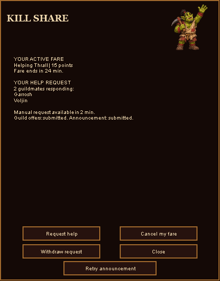
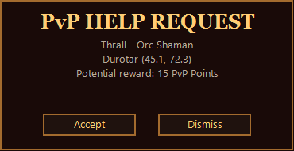

● HORDE GUILD · WOW FOREVER
Gondor PvP.
By Kingpin / Doctor of War
Collect cards from honorable kills. Rally your guildmates. Earn points for showing up when the fight finds them.
WoW Forever · 0.9.9 beta · 75.4 MiB
You there. Yes, you.

↖ Click for a bollocking
The sergeant’s roasts need JavaScript.
THE GONDOR FIELD MANUAL
01 / COLLECT
02 / RALLY
03 / SHOW UP
BEFORE YOU CHARGE IN
Get battle-ready.
One download. Your guild at your back.
Extract the ZIP
Put the Gondor_PvP folder in your Forever client’s Interface/AddOns folder. The Gondor_PvP.toc file belongs directly inside it.
Enable at character selection
Open AddOns , enable Gondor PvP , then enter the game.
Open your binder
Type /gpvp or left-click the murloc minimap button. Right-click the button to open Settings.
YOUR ORDERS, NICE AND SIMPLE
From first kill to backup.
Learn the buttons here.
01 / COLLECT
Your kills.
Your existing lifetime honorable kills count. The first card unlocks at 5 kills , with 69 cards to earn through 1,000 kills.
Open your binder with /gpvp. Click an unlocked card to inspect it, then use Previous and Next to browse. The rest stay a surprise.
Start here → Open Settings and choose PvP death alerts and Incoming Kill Share offers . Both start off.

Offline addon preview Card binder · Click to enlarge ↗
02 / CALL FOR BACKUP
Bad odds?
In the binder, choose Kill Share → Request help , or type /gpvp request. Your responding guildmates appear in the Kill Share panel.
With death alerts enabled, a PvP death can send the call too. If the client needs confirmation, answer the prompt.
Change of plans? Withdraw request ends your own call. Cancel my fare ends the help job you accepted.

Offline addon preview Kill Share · Click to enlarge ↗
03 / ANSWER THE CALL
See the offer.
Enable Incoming Kill Share offers in Settings. Each popup shows who needs help, their location, and the potential points.
Select Accept and follow the requester’s map pin. You can help one accepted fare at a time.
Offer too quick? In Settings, adjust its expiry from 5 to 60 seconds . The default is 15.

Offline addon preview Incoming offer · Click to enlarge ↗
04 / SHOW UP
Close the distance. Earn your points.
Meet alive, in the same phase, and within five feet . If the addon cannot identify you automatically, target each other . The helper can check the completed fare and tally under Points in the binder.
Rewards depend on travel distance. Repeat rewards from the same requester are limited to once every ten minutes. If precise positioning is unavailable, the fare stays pending.
↗
BETA 0.9.9
Still sharpening the axe.
Offline checks pass. Live-client gameplay verification is pending. Death detection, channel delivery, map pins, and precise positioning need testing in Forever.